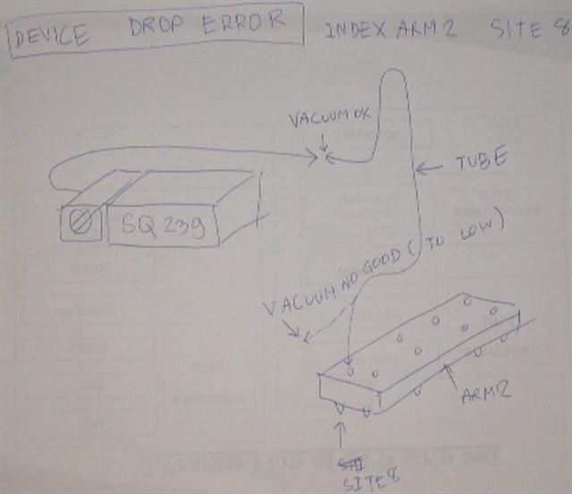
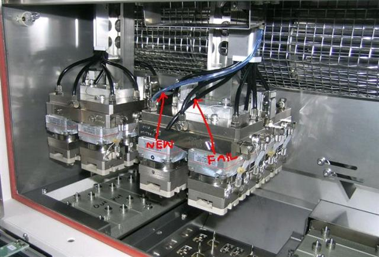

Service History
Subject: Device Drop Error on NS-7080#01 for Index Arm 2
Handler Model: NS-7080 (UTL3, S/N: 181384, Mfg: Oct 2007)
Controller: RC520 (MMI 2.0K)
Date: 10 Mar 2008
Symptom
Device drop error (Site H) for Index Arm 2 during production.
Customer found Index Arm 2 Site H tubing broken.


Action
Cause
Broken tubing for Site H of Index Arm 2.
Remarks
Follow up by 0042-NS7K.
Similar case as 0155-NS7K.